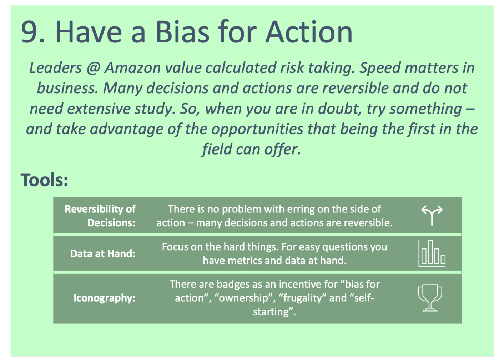

28th of November 2021
The 9th of Amazon's leadership principles is "Have a Bias for Action". Most (if not all) of the principles encourage staff to be proactive, both from a technical and a strategic point of view. There are three tricks supporting you in decision making for AI solutions. Having the right "Data at Hand" is one of them.
Focus on the hard things. For easy questions you have metrics and the right data at hand.
How to balance principle 9 (Bias for Action) with principle 4 (Leaders are Right - A Lot)? How to answer questions like “are we up to date on collections or not”? Having the right data at the right time in front of you and developing and monitoring metrics does the trick.[1]
What professionals in the ML and data science field expect from the underlying business - they are developing for - data science teams should apply to their selves, too: It is crucial to collect the right data to be able to answer easy questions. A good example is time and effort. Without tracking the hours spent on individual features or tasks, the team won't be able to make accurate effort estimation to forecast development timelines or give an educated status update.
In a project I was leading in 2021 the effort tracking was specifically important. We had an engagement with a client on several different projects with a fixed number of weekly hours.
For this particular project we distributed the tasks between different roles in the team flexible. We distributed the responsibility as well, so that each team member had to take care
we would not exceed the weekly budget. Now the information whether the weekly limit was reached is not only relevant for the project manager (PM), but for each individual member. The
key was a simple dashboard for the team, updated every week at a certain time after the hours have been checked in. The difference between the budgeted time and the hours booked was
the indication how much more work to put in the project for the rest of the week. This sounds trivial, and an intuitive thing to do, but it isn't common practice in many development
teams to prepare this information for each team member. In most projects, the information regarding hours worked is centralized in the hands of the PM. Obviously - in a professional
services company - the trick "Data at Hand" might be easier to implement, since working time is tracked anyways. But it might be worth considering something in this fashion for all
kinds of data science teams.
Note: The information is used to measure the development effort of features as well. It will help Solution Architects or PMs to make better effort estimations.
[1] Cf. Rossman, J., Masters, R., Cancelosi, C., Miller, R., Weber, K., & Jones, T. (2016). The Amazon Way: 14 leadership principles behind the world's most disruptive company. Clyde Hill Publishing.